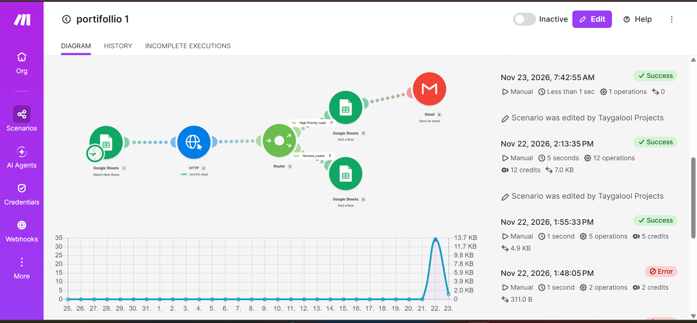

Click to inspect workflow
Sales & Revenue Ops
Live on GitHub
Automated B2B Lead Enrichment & Personalized Outreach
Ingests inbound leads via Google Sheets/Webhooks, enriches company context through a Python FastAPI scoring microservice, generates tailored cold outreach copy with Gemini, and routes high-intent leads automatically.
- Orchestration: Make.com multi-branch router + Google Sheets CRM sync
- Backend: FastAPI + Pydantic validation exposed via Cloudflare Tunnel
- Result: Eliminates manual prospect research and standardizes ICP lead scoring
Make.com
Python
FastAPI
Gemini API
Google Sheets